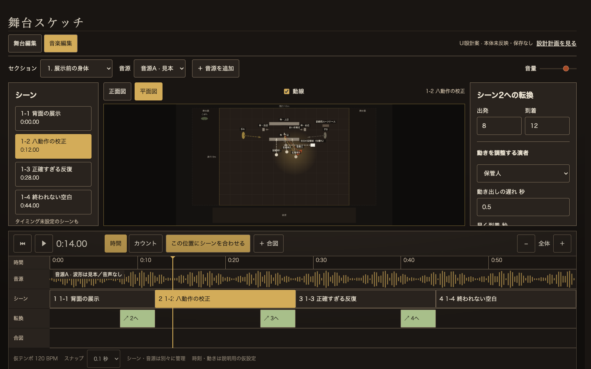

最新の修正方針：舞台編集にタイムラインだけを追加。本人の指示により、別の編集画面・タブ・独自の左右パネルは取り止めました。現在の確認用UIは既存の舞台編集画面のまま、下部タイムラインと正面／平面の一図表示だけを追加しています。本体は未変更です。以下は旧案の検討履歴で、現行UIの仕様ではありません。
修正後のUIを開く
2026-09-12 · 設計案 / 採用・本体実装前
舞台編集と音楽編集を、
同じ舞台スケッチのタブにする。
シーンを別アプリへ渡すのではなく、同じシーンを「空間」と「音楽の時間」から編集します。
今回見てほしいのは、タブによる切替、舞台図とタイムラインの面積、転換の調整欄の位置です。ミュージックシンクは独立アプリとして残します。
UI案を開いて触る →
本体は未変更。現在の stage.html / style.css / stage-sketch.js の複製に、確認用の差分のみを重ねています。サンプルは「継ぎ目の庭」。時刻・波形・補間は説明用の仮設定です。端末データの読書き・音声再生・外部送信は行いません。

1. 同じ舞台、二つの作業面
舞台編集
現在の本体画面を維持。シーンの構成、演者とセットの登録、舞台・姿勢・高さ・照明・背景を編集します。
正面と平面の同時表示も、これまでどおり残します。
音楽編集
音源とシーンのタイミング、演者の位置・向き・動線・転換を編集します。
舞台図は正面か平面の一つだけ。下部の全幅をタイムラインに使います。
音楽編集の配置
| 場所 | 置くもの | 理由 |
|---|
| 最上部 | 舞台編集／音楽編集タブ | アプリ内の作業面であることを明示 |
| その下 | セクション、音源の選択・追加、音量 | 編集対象を常時確認。複数音源に対応 |
| 左 220px | 同じセクションのシーン一覧 | 未タイミングのシーンも消えない |
| 中央・可変幅 | 本体の舞台図。図の上に正面／平面、動線切替 | 同じ演者・セット・人体・投影式を使う |
| 右 260px | 選択対象の転換・動き出し・到着・経路 | 登録や照明設定は出さず、今の編集に絞る |
| 下部全幅 | 音源／シーン／転換／合図のレーン | 時刻の前後関係を一つの軸で判断 |
本実装ではタイムラインの境界を上下ドラッグして高さを調整できる案です。初期は約300px、図を最低280px確保。狭い画面では左右欄を引き出しへ退避します（今回の見本では900px未満を縦配置で確認）。
2. 作業の流れと、勝手に変えない境界
- セクションを選ぶ。 既存シーンをすべてそのまま表示。時刻未設定は未設定のまま。
- 音源を追加する。 素材登録と音源クリップだけを追加。セクション・シーン・配置は一切増減しない。
- 使う範囲を決める。 音源の IN / OUT とセクション内開始位置を設定。原音源は切断・上書きしない。
- シーンを曲に合わせる。 シーン開始をドラッグ、時刻を直接入力、または再生位置に合わせる。どの操作でも同じ sceneId。
- 転換を整える。 緑の転換帯で出発・到着、図で位置と経路、右欄で演者ごとの遅れ・早着を設定。
- 再生して戻す。 再生位置を時計にして、音楽と駒を同期。修正は本体と共通のUndoで戻す。
「この配置を記録」は既存シーンを選択しているとき、そのシーンの配置更新。途中の動きを追加する場合は「移動点を追加」と区別する提案です。新しいシーンは明示的な「シーンを追加」だけで作ります。自動記録の細部は実装前に操作を確認します。
タイムラインの振る舞い
- 時間／カウントは画面全体の単位。右側の遅れ・早着・IN/OUTも追従。時間表示では拍番号を混ぜない。
- ズームアウト時は目盛り文字を実測幅で間引く。短いシーン名は省略し、選択欄で全文を読む。
- ズームはポインタ直下の時刻を固定。横スクロール中もレーン名は固定する。
- Deleteは選択中の移動点・合図・音源クリップへ。文字入力中は発火させない。シーン本体の削除は影響を示して別操作にする案。
- タブ切替で音は一時停止。選択シーン・再生位置・ズーム・スクロールは維持。舞台編集に戻った際に再生途中の一時座標を保存しない。
3. 二つのシーンデータを持たない
本体の project.scenes を唯一のシーン正本にします。音楽編集が別のシーン配列を持ち、戻るたびに取り込む方式は採りません。
project.scenes / cast / sets ── 空間・登録の正本
│ sceneId / pieceId で参照
section.musicTimeline（提案）
audioClips[] 音源ID・素材IN/OUT・セクション上の開始秒
sceneTimings[] sceneId・開始位置・未設定は null
transitions[] 対象シーン間・移動点・出発/到着の補正
cues[] 合図の位置・既存Qとの任意リンク
│
共有の時刻変換・補間・再生エンジン
├─ 舞台編集のセクション再生
└─ 音楽編集のタイムライン再生
| 所有するもの | 設計方針 |
|---|
| 配置 | シーンの到着配置は pieces が正本。中間の移動点だけを音楽タイムラインに保持。両画面からの更新先を同じコマンドにする。 |
| 時計 | セクションの再生秒を基準にし、音源クリップの開始位置＋素材INで原音源の秒へ変換。描画用rAFやメトロノームは別時計を積み上げない。 |
| 時間／カウント | 音楽上のイベントは timingBasis（time/count）と値を持ち、指定した基準だけを正本にする案。表示単位の切替では基準を変更しない。既存Music Syncはカウント基準で変換し、テンポ編集で秒指定イベントを勝手に動かさない。 |
| 音源 | 既存 stage-audio-store.js の端末内音源保管を共用。JSONはID・メタデータ・クリップ参照のみ。別端末で不足した音源は「選び直す」。共有・公開済みと誤表示しない。 |
| 複数楽曲 | 1セクション1曲には固定しない。初期移植は直列の複数クリップ。混合再生・クロスフェードは未承認の追加範囲として分ける。 |
| セット・姿勢・高さ | 本体のデータと描画をそのまま参照。音楽編集の演者位置変更で、支持物・持ち物・高さ・姿勢・照明を消さない。セット転換は表示対象、編集は舞台編集側を維持する案。 |
| 再生と保存 | 一時位置は anim 系の表示層に限定。止めると正本位置に復帰。意図的な「配置を記録」以外で正本化しない。 |
時間とカウントの正本方式は、複数音源・テンポ変更の実例で確定が必要です。拍の地図がない音源は秒で編集できることを優先し、カウントを捏造しません。
4. 再利用するもの／持ち込まないもの
| 現在の資産 | 使い方 |
|---|
| stage.html / style.css / 本体の人体・平面描画 | 既存舞台面を共用し、モードで道具の表示だけ切替。 |
| Music Sync の countToSec / secToCount / poseAt | アンカー・曲線・最短回転・演者別ラグの計算を、DOMと保存から分離してテスト付きで共通化。 |
| 本体 formationCountToSec / formationSecToCount / formationPoseAt | すでにある対応処理と数値比較し、一つのエンジンへ。単純な全文コピーはしない。 |
| playFormationSection / syncFormationPlaybackAtTime | 現行再生を参考に、音源クリップと共有時計の再生コントローラへ段階移行。 |
| applyFormationPackage / formationLink / audioTrackBySong | 既存データの互換読込に限定。ネイティブ編集のたびに交換パッケージを適用しない。 |
| 別モーダル・別保存・演者再登録・舞台サイズ設定 | 音楽編集には持ち込まない。既存Music Syncの機能やコードを今回削除する意味ではない。 |
| 予習モード・ミキサー・音色加工 | この編集画面の対象外。閲覧・配布は別のViewer計画を維持。 |
既存Music Syncの内容を守る移行
最初は現行パッケージを読むアダプターで表示比較。採用時は元パッケージを残したまま版番号付きのネイティブデータを生成し、ID・シーン数・時刻・配置を照合します。1セクションにつき書き込み先は一方だけにし、移行済みセクションを古いモーダルが無警告で上書きしないようにします。
独立したミュージックシンク本体は変更・廃止せず残します。共通エンジンへの切替も、単体側の回帰テストが通るまでは行いません。
細かな機能は消さず、必要な場面へ寄せる
BPM・BPM推定・先頭を記録・拍子・テンポ合わせの点は下部の「テンポ設定」へ、メトロノーム・A/B区間ループは再生操作の詳細へまとめる案です。演者の複数選択、向きのホイール変更、曲線ハンドル、前後反転は舞台図の道具として残します。音の確認・予習・下部の複製／削除は常設しません。これらの詳細パネルは今回の配置見本には未実装です。
5. 大きな移植を、小さく確かめる順番
- 今回：配置判断。 UI案でタブ・舞台図・タイムライン・選択欄の場所を決める。本体の編集なし。
- 表示だけ。 音楽編集タブと読取専用タイムライン。すべての既存シーンが出ること、1図だけになることを確認。
- 音源と時計。 音源追加・再接続・IN/OUT・複数曲の直列再生。素材操作前後でシーンID・件数・配置が完全一致することを確認。
- シーンの時刻編集。 ドラッグと数値入力、時間／カウント、共通Undo。タイミング未設定・重複時刻・終端も扱う。
- 演者の動き。 ドラッグ複数選択、位置・向き、曲線、演者別の遅れ・早着、中間点。セット・支持物・姿勢・高さを保護。
- 移行と回帰。 既存Music Syncデータを同じ時刻で比較。セクション再生、保存再読込、共有・別端末の音源欠落まで確認。
合格条件
- 音源の追加・入替・範囲指定で、既存セクションとシーンの数・ID・順序・配置が変わらない。
- 時間／カウント切替を往復しても正本の時刻は変わらない。未設定nullを0秒へ変換しない。
- 同じ音源時刻で舞台編集の再生と音楽編集の再生が同じ位置・向きを描く。曲線・ラグ・前後反転・終端を含む。
- 再生停止、タブ切替、非表示化、音源読込失敗で再生が残らず、一時座標が保存されない。
- 1回のドラッグは1回のUndo。入力中のフォーカス維持。Deleteは入力欄では編集対象を消さない。
- 1440×900・1024×768の実描画と最大ズームアウトで文字重なりを測定。実音源の同期と聴感は別途本人確認。
6. 実装前に決めたいこと
- 「球を打つモード」の意味。 この案では仮に「音楽上に合図（キュー）を置く」としています。拍の先頭を打つ操作を指すなら、合図レーンではなくテンポの地図に配置します。既存台本Qとの結び付けは未確定です。
- 曲同士を重ねる必要があるか。 複数曲は対応前提。第一段階は順番に使う構成とし、クロスフェードは別判断。
- セット転換の編集範囲。 まずは舞台編集で決めた転換を表示する案。音楽編集でセットの時刻も直接編集するかは追加判断。
これらは未確定部分として分離しており、今回のUI案を見るための前提回答は不要です。
参照・設計メモ・確認範囲
なぜこの構成にしたか（design-web設計メモ）
- 利用者：演出・振付を組む本人。PCを中心に、稽古で曲の特定箇所と演者の移動を繰り返し調整。
- 体験：別アプリへ移動・再反映しなくても、いま見ているシーンを直せる安心感。
- 固有の核：舞台セットを含む本体の図と、音楽上の出発・到着が同じ対象を表すこと。
- 踏襲：本体の机色、人体、パネル、シーンの呼称。外す：別アプリの黄色背景、重複する保存と登録、汎用DAWの多数のミキサーレーン。
- 条件：一図、複数曲、シーン不増殖、正本保護、Undo、入力44px、縮小時のラベル整理、ローカルのみ。
比較した構成：タイムライン常設は通常編集を圧迫、別モーダルは今回の意図と不一致。よって本体内タブ切替を選択。参照はユーザーが指定した本体とMusic Syncの2画面で十分であり、外部の作風は追加していません。
現行ソースと履歴の違い
確認時点の build_stage.py は stage.html を独立正本として検証する構成でした。古い引き継ぎの「index.htmlから生成」は現状と異なります。実装時には再度作業中ファイルと並行編集を照合します。
今回の実装範囲はUI見本だけです。タブ、図の切替、セクション選択、シーン選択、目盛りクリック、単位・ズーム、見本の再生と遅れ調整を操作できます。音源読込、配置記録、転換端のドラッグ、Undo等は本実装前で、操作時にその状態を示します。
検証：1440×900の音楽画面は自動デザイン監査 NG 0 / WARN 0。1024×768でも一図とタイムラインが重ならず、右欄はスクロールで続きへ進めます。390pxでは縦配置の参考表示、精密編集の適性は未確認。タブ・単位・8セクション選択・見本再生はブラウザ操作で確認しました。比較に使った本体14ファイルのハッシュも一致しています。
再生成：このフォルダで node build.mjs。元ファイルは読み取りだけで、このフォルダ内の生成物へ出力します。検証は node check.cjs（このMacのPlaywrightパスを使用）。本体のビルド・公開・Service Worker変更は行いません。
UI案を確認する →